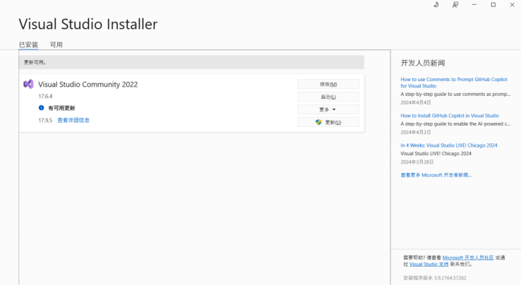
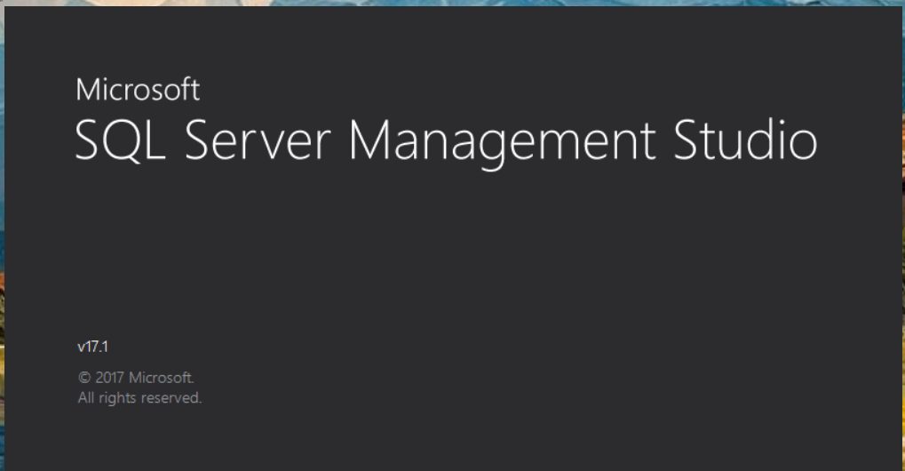
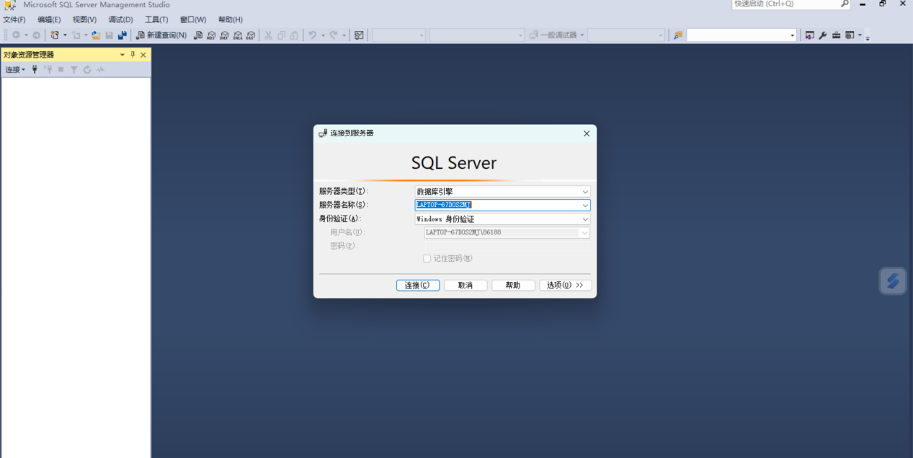
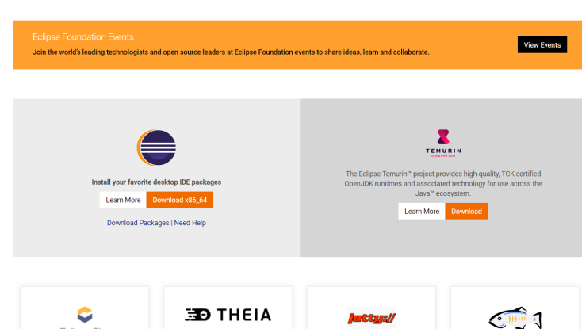
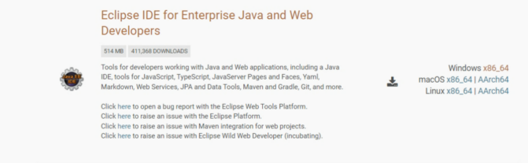
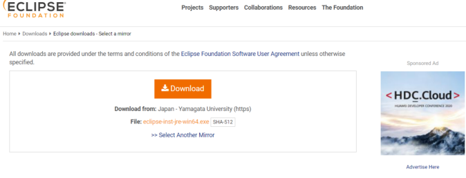
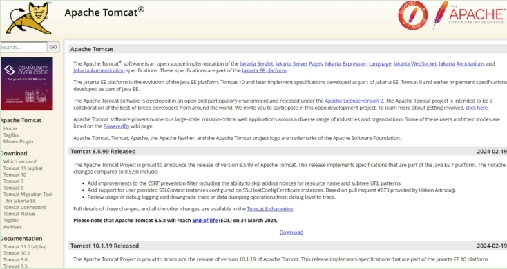
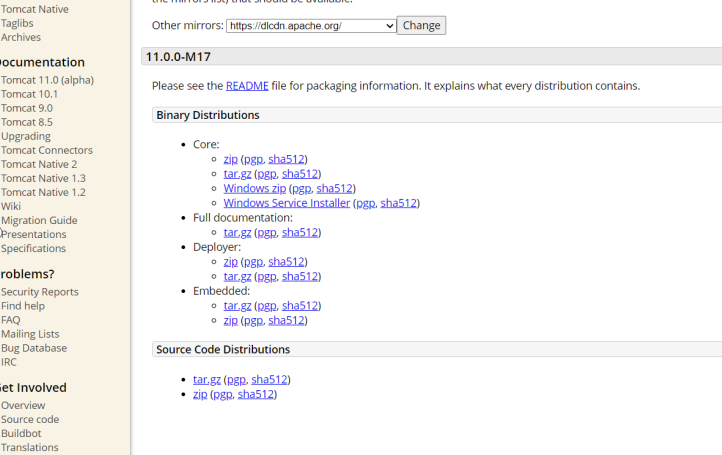
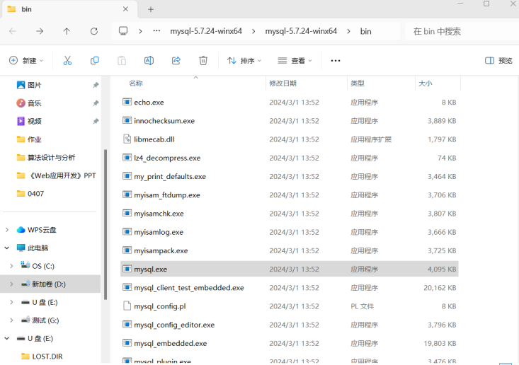

web应用开发软件下载：
Visual Studio 2022 Community（安装成功）
1.1 下载地址
首先登陆Visual Studio官网：Visual Studio官网，然后选择需要的版本。
1.2 开始安装
点击下载社区版之后，会自动弹出一个窗口，选择存放下载文件的位置。
下载结束后，双击开始安装。安装完成后会自动弹出以下窗口，根据要使用Visual Studio所做的事情选择不同的功能集和 工作负载，同时选择安装路径（建议使用默认安装路径）。在窗口的上方还有单个组件、语言包、安装位置这些选项，可以不用管，均为默认值。最后点击安装。安装完毕后，重启。
1.3 打开Visual Studio
重启之后，鼠标右键点击，可以看到多了一个使用Visual Studio打开，点击就可以进入Visual Studio。

MS SQL Server 2016下载安装教程：（安装成功）
下载：
获取Microsoft SQL Server 2016安装包，可以从微软官方网站获取。
选择左侧目录中的服务器，从服务器的子级列表中找到SQL Server 2016，并鼠标点击。
在右侧内容页中选择[中文-简体]，会看到2个连接，分表代表开发版和企业版，根据需要进行选择点击后开始下载了。
1、双击下载的cn_sql_server_2016_enterprise_x64_dvd_8699450.iso文件会自动装载如虚拟光驱，打开虚拟光驱会看到安装包的内容
2、双击setup.exe进入安装向导界面
3、选择左侧目录中的的[安装]
4、选择右侧的第一个选项[全新SQL Server独立安装或向现有安装添加功能]，进入输入产品密钥界面
5、输入产品密钥后点击[下一步]按钮，进入许可条款界面
6、在许可条件界面中勾选上[我接受许可条款(A)]，然后点击[下一步]按钮，进入全局规则，然后自动进入Microsoft更新界面
7、直接点击[下一步]按钮，进入产品更新界面
8、取消勾选[包括SQL Server产品更新(I)]选项，然后点击[下一步]按钮，进入安装安装程序文件界面，通过后自动进入安装规则界面，然后自动进入功能选择界面
9、在功能选择界面中勾选必要的功能项，此处如上图勾选了数据库引擎服务、SQL Server复制、全文和寓意提取搜索、客户端工具连接、客户端工具向后兼容性、客户端工具SDK（注意：Reporting Services是报表服务，如果不用SQL Server做报表服务是没必要选择的，其他根据你的需要进行选择），然后修改实例根目录和共享功能目录，此处为了节省C盘空间，因此选择了D盘（注意：虽然选择了D盘但是SQL Server还是会把一些文件安装到C盘的）。然后点击[下一步]按钮进入到功能规则，然后自动进入到实例配置界面。
10、直接点击[下一步]按钮，进入服务器配置界面
11、直接点击[下一步]按钮，进入数据库引擎配置界面
12、点击[下一步]按钮，进入准备安装界面
13、点击[安装]按钮，进入安装进度界面
14、等待安装进度完成，进入完成界面
15、点击[关闭]按钮返回到SQL Server安装中心，此时Microsoft SQL Server 2016数据库引擎已安装完毕，但是由于功能选项中没有Microsoft SQL Server Management Studio，因此服务器上缺少图形化的访问界面，因此我们还需要安装一下Microsoft SQL Server Management Studio。
安装Microsoft SQL Server Management Studio
1、选择SQL Server安装中心安装->安装SQL Server管理工具
2、会直接打开IE浏览器并定位到Microsoft SQL Server Management Studio（SSMS）的下载页面
3、点击链接[下载 SQL Server Management Studio（SSMS）]，会自动通过浏览器下载
4、双击SSMS-Setup-CHS.exe，进入安装向导界面
5、修改安装位置为D盘，当然你也可以默认，然后点击[安装]按钮，进入安装进度界面
6、等待安装完毕，进入重启提示界面
7、点击[重新启动]按钮，对windows操作系统进行重启，重启后就可以在开始菜单中看到Microsoft SQL Server Management Studio菜单项了
8、为了后期使用方便可以把Microsoft SQL Server Management Studio固定到开始屏幕
9、进入登录界面
10、在登录界面身份认证选择SQL Server身份验证，登录名输入sa，密码输入安装时设置的密码，然后进入使用界面


eclipse（安装成功）
1.浏览器找到eclipse官网

2.在下载页面找到 Eclipse IDE for Enterprise Java and Web Developers，选择适合自己电脑版本的进行下载


成功界面：
tomcat：（安装成功）
1：找到tomcat官网，然后根据自己的jdk版本选择适合自己的tomcat版本下载


MySQL 安装与使用：
1.首先，去数据库的官网http://www.mysql.com下载MySQL。
2.然后点击downloads，community，选择MySQL Community Server
3.找到Recommended Download，然后点击go to download page
4.点击download进入下载页面选择No thanks, just start my download就可以开始下载了
安装MySQL
1.打开刚刚下载好的安装包，开始安装MySQL。
2.选择 I accept 然后点击next进入下一步
3.这里选择Developer Default，然后点击next进入下一步。
4.这一步是检查安装条件，直接点击next进入下一步就可以了。
5.点击execute执行就可以了，执行完后点击next进入下一步
6.继续点击next进入下一步。
7.选择第一个然后点击next进入下一步。
8.点击next进入下一步
9.点击next进入下一步
10.设置root密码然后点击next进入下一步
11.点击next进入下一步。
12.继续点击next。
13.点击execute执行。
14.点击next。
15.点击finish。
16.一路点击next，并check root密码，MySQL成功在电脑上安装完成了
bin目录下保存了MySQL常用的命令工具以及管理工具、data目录是MySQL默认用来保存数据文件以及日志文件的地方（我的因刚安装还没有data文件夹）、docs目录下是MySQL的帮助文档、include目录和lib目录是MySQL所依赖的头文件以及库文件、share目录下保存目录文件以及日志文件。
进入bin目录，按住shift键然后点击鼠标右键可以选择在该目录下打开命令窗口，或者在地址栏中输入cmd进入命令窗口。输入mysql -u root -p后回车，然后会提示输入密码，输入密码后就会进入MySQL的操作管理界面。
输入show databases；（注意末尾有分号）可以查看当前MySQL中的数据库列表，输入use test；可以进入test数据库（前提是要有此数据库），输入show tables可以查看test数据库中的所有表，输入quit可以退出MySQL的操作管理界面。
成功界面

PostgreSQL 安装与使用（下载失败 ，原因：未找到合适版本）
Navicat Premium 安装与使用（下载失败，原因：未找到合适版本）
1.C/S架构和B/S架构的区别
1、使用协议
B/S架构更多的时候是使用了HTTP协议、而C/S架构更多的时候使用的WinSocket协议（TCP、UDP）
2、开发和维护成本
C/S架构开发维护成本高于B/S架构。因为需要开发客户端和服务器两套程序，所以开发成本会增加。因为采用cs结构时，对于不同的客户端要开发不同的程序，而且软件安装调试和升级都需要在所有客户机上进行
B/S架构具备通用性，所以开发成本较低；因为不需要安装客户端，所以客户端不需要进行升级，只需要将服务器上的软件版本升级，然后从新登录就可以了。
3、安全性
C/S架构的安全性高。C/S架构适用于专人使用的系统，可以通过严格的管理派发软件。B/S架构使用人数多，不固定，安全性低。
4、客户端负载
c/s客户端负载大。cs客户端不仅负责和用户的交互，收集用户信息，而且还需要通过网络向服务器发出请求。
b/s把事务处理逻辑部分交给了服务器，客户端只是负责显示。
什么是基于B/S架构的web应用
B/S，即Browser/Server(浏览器/服务器)架构，就是只安装维护一个服务器，而客户端采用浏览器运行软件。
2.在eclipse中如何设置编码
1、设置工作空间编码格式
在Window--》Preferences--》General--》Workspace--》UTF-8--》OK
2、项目范围的编码格式设置
分别进行Project--》Properties--》General--》Resource--》Inherited from container（UTF-8）--》OK操作
3、某类文件文件的编码格式设置
分别进行Eclipse--》Window--》Preferences--》General--》Content Types--》在右侧找到要修改的文件类型--》在下下面的Default encoding 输入框中输入UTF-8--》Update--》OK操作
3.如何将tomcat和Eclipse相关联
1.打开Eclipse，单击“Window”菜单，选择最下方的“Preferences”。
2.单击“Server”选项，选择下方的“Runtime Environments”。
3.点击“Add”添加Tomcat。
4.点击“Next”，选中自己安装的Tomcat路径。
5.点击“Finish”完成。
6.首先建立一个web项目
（File → New → Dynamic Web Project ）
7.创建一个Dynamic Web Project
8.点击“Next”下一步
9.点击“Next”下一步
10.点击“Finish”完成，项目创建完毕，让Tomcat服务器显示在控制台上，将Web应用部署到Tomcat中
11.添加Tomcat到控制台
（Window → Show View → Servers ），如果Show View没有Servers，就点击Other(更多)，然后寻找或者搜索
12.点击链接No servers are available. Click ths link to create a new server. ，在弹出的对话框中选择Tomcat版本。
13.点击“Next”，添加我们的项目
14.点击“Finish”完成
15.项目已成功添加到Eclipse的Tomcat中，现在点击运行即可。